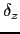
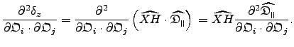
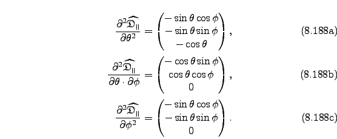

Next: relax development Up: Spheroidal dot product derivatives Previous: The dot product gradient Contents Index
The second partial derivative of the single spheroidal dot product 
with respect to the orientational parameters
 and
and
 is
is
|  | (theparentequation.188) |
The second partial derivatives of the unit vector with respect to the spherical angles are
|  |